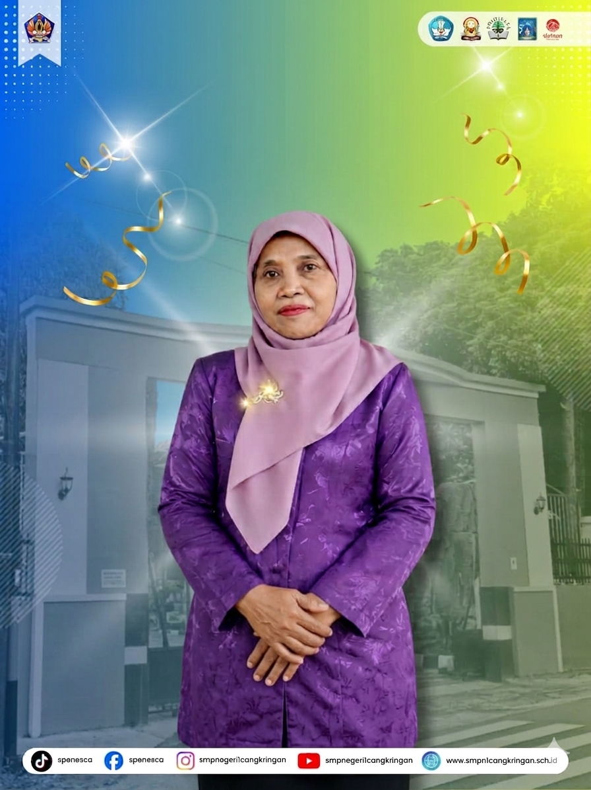

Program Inovatif
Fokus pengayaan projek kearifan lokal, penguatan numerasi-literasi digital, serta penerapan metode kolaboratif menyenangkan.

Mewujudkan proses belajar yang aktif, inovatif, dan berbudaya lingkungan. Berdiri di lereng Gunung Merapi dengan prestasi luhur dan wawasan global.

Kepala Sekolah
Assalamu'alaikum warahmatullahi wabarakatuh.
Segala puji ke hadirat Allah SWT yang telah melimpahkan berkah-Nya kepada kita semua. Website ini hadir sebagai gerbang informasi tepercaya dan representasi kemajuan digitalisasi layanan di lingkungan SMP Negeri 1 Cangkringan.
Kami berkomitmen menciptakan ekosistem belajar yang asri, nyaman, dan dinamis di bawah lereng Merapi. Melalui sistem pembelajaran terpadu, kami berfokus pada:
Kami mengajak semua elemen, baik guru, wali murid, alumni, hingga masyarakat luas, untuk terus melangkah bersama dan bersinergi melahirkan kader-kader penerus bangsa yang andal, religius, dan berdaya saing global.
Wassalamu'alaikum warahmatullahi wabarakatuh.